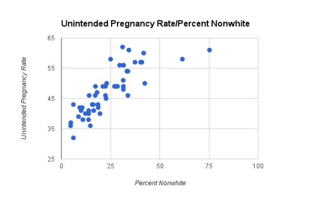

So the other day I read Ross Douthat and Megan McArdle’s takes on the whole “conservatives should be pro-contraception if they really want to reduce abortion” thing, and I really liked them because the idea that providing better access to contraceptives reduces abortion rates was one of those little things I absorbed at some point during my socialization and have never since had occasion to question.
So, how do you prevent abortions?
There are pretty much two ways: lower the rate of unintended pregnancies and lower the probability of abortion conditional on unintended pregnancy.
I. Unintended Pregnancies

Here’s a map of unintended pregnancies by state. My first thought was “poverty rates?”

Not the worst idea, correlation .37. My second thought was “wait no, percentage nonwhite”

Better idea, correlation .82. Neither of my thoughts was “oh, red states and blue states”

Which is good because that is a bad idea, correlation .29 (in the direction of blue states having more). In other words, you’re not allowed to blame it all on abstinence-only sex ed.
I decided to search for some randomized controlled trials on interventions to prevent unintended pregnancy and found this cheerful meta-analysis which looks at 26 trials of interventions including abstinence-only, conventional, and other things based on stuff like “operant theory” and “empowerment theory” and concludes, “strategies evaluated to date do not delay the initiation of sexual intercourse, improve use of birth control among young men and women, or reduce the number of pregnancies in young women.” Apparently results were “remarkably consistent across studies” in showing that nothing made teenage boys more likely to use birth control. So that’s something.
Now that was in 2002. Since then we’ve had that Colorado study showing that if you give women IUDs, their rates of unintended pregnancy go down. Which seems obvious. Except as McArdle points out the study doesn’t actually show this, it just shows that they started a program in some counties of Colorado to give free IUDs to low-income women, and then the abortion rate fell in those counties. As it did in the rest of the US. And they didn’t really have a control group so yeah.
I’m actually all for aggressively promoting IUDs and implants. Even if this study didn’t really show anything it seems … physically impossible for it not to help … I mean I guess the main issue is “can you convince people to get them and how much does it cost.” But I don’t think the reason most people get pregnant without meaning to is that they don’t know birth control exists or can’t afford it/don’t have access to it, and while I’m still somewhat confused as to why unintended pregnancies happen it seems like a complicated social technology issue that is not amenable to government intervention.
II. Abortions
Gotta say, probably the best thing to do here is to outlaw abortions.

McArdle gives this really pretty picture. Who is really great at preventing abortions? Ireland. How do they do it? Make it illegal. (Also Austria, but I honestly don’t know what’s up with Austria. According to Wikipedia there are very few abortion clinics in rural areas of Austria? Idk man.)
In terms of state-level data, I looked at abortions/unintended pregnancies in the US. The correlations with poverty and percent nonwhite were both lower (-.26 and .36 respectively) while correlation with percent voting for Obama was .77. The “make abortion socially stigmatized and really hard to get” plan is looking good.
Also, I liked McArdle calling this idea the “torture doesn’t work” of the feminist movement. I remember, when I was 15 or so, thinking that abortion and torture both seemed like hard moral problems. Then at some point someone told me that torture didn’t work, and someone else told me that actually making abortion illegal just drove it underground and really the best way to prevent abortion was to make contraception more widely available, and I didn’t really think about either one again for years.